Персонажи
Fanpage
Все серии
Манга
Shikimori
Игра по мотивам
Узумаки Боруто
Шиноби клана Узумаки из Деревни Скрытого Листа, сын Седьмого Хокаге Наруто Узумаки и Хинаты Хьюги, что делает его прямым потомком клана Хьюга. Изначально небрежный в своих обязанностях в качестве члена команды Конохамару и обиженный на своего отца из-за должности Хокаге, которая не оставляла ему времени на семью, Боруто в конце концов начинает уважать его и воссоединяется с ним, но решает стать таким шиноби, как его наставник, Саске Учиха, — шиноби, который будет поддерживать Хокаге и деревню.
Родители
Хината Хьюга
Наруто Узумаки
Учиха Сарада
Генин Деревни Скрытого Листа из клана Учиха. Так как Сарада росла без своего отца, она сначала пытается понять, кто она или чем она должна быть. Встретив отца благодаря помощи Наруто Узумаки, Сарада узнает, что она определяется связями, которыми она обладает с другими, и как член команды Конохамару, она стремится однажды стать Хокаге, чтобы образовать узы с максимально возможным количеством людей.
Родители
Сакура Харуно
Саске Учиха
Митсуки
Искусственный человек, созданный Орочимару. Иммигрировав в Конохагакуре, чтобы узнать, является ли Боруто Узумаки его "солнцем" или нет, он стал студентом Академии Конохи, а после был помещен в команду Конохамару.
Родитель
Орочимару
Каваки
Ребёнок, воспитанный Карой чтобы стать будущим сосудом для Ишики Ооцуцуки и ключом к исполнению их самого большого желания. После того, как Команда 7 привела его в Коноху, Наруто Узумаки принял его в свою семью, позже развивает братскую связь с Боруто Узумаки, чтобы разгадать тайну Кармы.
Родитель

Неизвестно